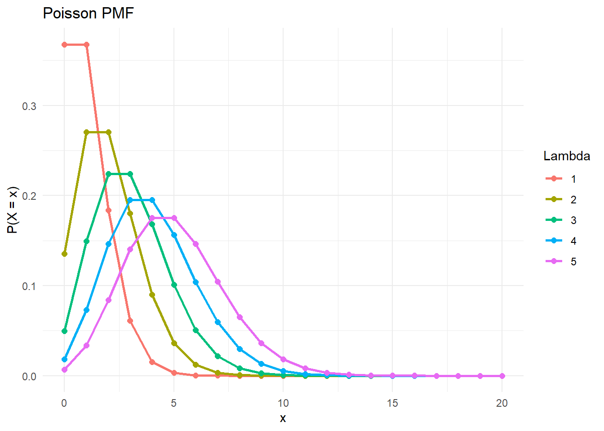
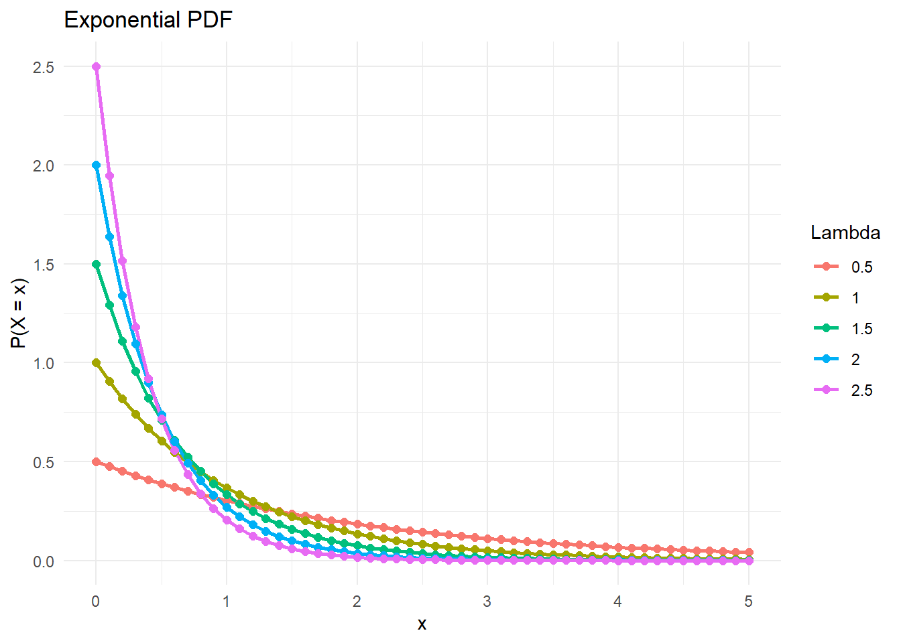

Chapter 13 Random Processes
A random process is a set or sequence of random variables indexed by time. That is, \(X(t)\) or \(X_t\) is a random variable indexed by time \(t\), or sometimes \(X(n)\) or \(X_n\) indexed by generation \(n\) as in the branching process which we discuss first. Several techniques have been developed to analyze these special types of random variables.
13.1 Branching Processes
Also known as a “Galton-Watson process”, a branching process uses random variables to model population growth. Let’s start with notation.
13.1.1 Random Variables
We’ll start by defining the random variables that characterize a branching process.
- \(X_n\) = size of the population at time (or generation) \(n\)
- \(Y_{i,n-1}\) = number of offspring produced by the \(i^{th}\) individual in generation \(n-1\)
How are random variables \(X_n\) and \(Y_{i,n-1}\) related? Intuitively, we can think of the population size of the current generation (\(n\)) as the sum of the offspring produced by each individual in the previous generation (\(n-1\)):
\[ \begin{aligned} X_n &= \sum_{i=1}^{X_{n-1}} Y_{i,n-1}\\ &= Y_{1,n-1} + Y_{2,n-1} +...+Y_{X_{n-1},n-1} \end{aligned} \] This is a recursive relation, where the number of summands depends on the previous value \(X_{n-1}\). Typically, we assume \(X_n = 1\). This recursive property necessiates the use of a special tool to analyze \(X_n\): the probability generating function.
13.1.2 Probability Generating Function
The Probability Generating Function (PGF) allows us to compute probabilities from branching processes. It is defined as
\[ g_X(t)=\mathbb{E}_X\left(t^X\right)=\sum_{n=0}^{\infty} t^n P(X=n) \] What makes the PGF so useful for branching processes is that its derivative evaluated at 0 yields the probability of that \(X\) takes on a particular value - that is,
\[ P(X = k) = \frac{1}{k!}\cdot\frac{d^k}{dt^k}g_X(0) \]
Similar to MGFs, independent random variables can be convoluted by multiplying their PGFs. If \(Y = X_1 + X_2\), then
\[ g_Y(t) = g_{X_1}(t)\cdot g_{X_2}(t) \] and by extension, if \(Y = \sum_{i=1}^nX_i\) and \(X_i\) are iid, then
\[ g_Y(t) = (g_{X_i}(t))^n \]
For i.i.d. \(Y_{i,j}\), the PGF also gives the first two moments:
\[ \begin{aligned} \mathbb{E}\left(X_n\right) & =[\mathbb{E}(Y)]^n \\ \operatorname{Var}\left(X_n\right) & =\operatorname{Var}(Y)\left(\sum_{i=n-1}^{2(n-1)}[\mathbb{E}(Y)]^i\right) \end{aligned} \]
Asymptotics exists for Branching Processes on i.i.d. \(\left\{Y_{i,j}\right\}\) with finite variance: \[ \begin{gathered} \text{Population-Level} \quad \quad \text{Individual-Level} \\ \\ \mathrm{E}\left(X_n\right) \rightarrow \begin{cases}0 & \mathrm{E}(Y)<1 \\ 1 & \mathrm{E}(Y)=1 \\ \infty & \mathrm{E}(Y)>1\end{cases} \\ \\ \operatorname{Var}\left(X_n\right) \rightarrow \begin{cases}0 & \mathrm{E}(Y)<1 \\ \infty & \mathrm{E}(Y) \geq 1\end{cases} \end{gathered} \] This allows us to analyze the long-run behavior of the branching process as \(n\rightarrow \infty\)
13.1.3 Finding the PGF of a Branching Process
As a result of the recursive property of the branching process, where the number of children produced in generation \(n\) depends on the number in \(n-1\), it turns out that the PGF of a branching process is
\[g_{X_n}(t) = g_{X_{n-1}}(g_{Y}(t))\] With this, a number of techniques are possible:
- We can find the probability that a given generation is of size \(k\) by computing the probability generating function of \(X_n\) and differentiating, as mentioned above.
- We may be able to use Mathematical Induction to derive the full PGF of the branching process for arbitrary \(n\).
- We can compute the probability of extinction, as we discuss in the next section
13.1.4 Finding the Probability of Extinction: Criticality Theorem
The Criticality Theorem states that the probability of ultimate extinction of a branching process is the smallest solution to
\[\eta=g_Y(\eta)\]
In general, we can solve for \(\eta\) by factoring the equation, or by using the quadratic equation:
\[ \begin{aligned} &0=a\eta^2+b\eta+c\\ \\ &\eta=\frac{-b \pm \sqrt{b^2-4 a c}}{2 a} \end{aligned} \]
13.1.5 Example
Consider a Branching Process where individuals duplicate with probability \(p\) and die with probability \(q\).
- Describe the mean and variance over time for this branching process. For what values of \(p\) will the process go extinct with probability 1?
- Establish the probability of eventual extinction for arbitrary \(p\).
Step 1: Define the pmf of \(Y\) based on the given reproduction probabilities. Does \(Y\) follow a known distribution?
\(f_y(y)=\left\{\begin{array}{ll}y=0 & \text { w.p. } q=1-p \\ y=2 & \text { w.p. } p\end{array} \quad \Rightarrow \quad y \sim 2\right.\) Bernoulli\((p)\)
Step 2: Calculate the moments of \(Y\), which can be used to calculate the moments of \(X_n\).
\[ \begin{aligned} \mathbb{E}[Y]=2 p \quad \quad \quad \quad \mathbb{E}\left[X_n\right] & =(2 p)^n \\ \operatorname{Var}(Y)=4 p q \quad \quad \operatorname{Var}\left(X_n\right) & =\operatorname{Var}(y) \sum_{i=n-1}^{2(n-1)} \mathbb{E}[Y]^i \\ & =4 p q \sum_{i=n-1}^{2(n-1)}(2 p)^i \end{aligned} \]
Based on our asymptotic results, we know that the process \(X_n\) will go extinct with probability 1 if \(\mathbb{E}[Y]<1\)
\[ \mathbb{E}[Y]=2 p \Rightarrow \text { process will go extinct with probability 1 if } p< \frac{1}{2} \]
Step 3: Find the probability of ultimate extinction using Criticality Theorem.
First, find the PGF of \(Y\): \[ \begin{aligned} g_Y(\eta) =\mathbb{E}\left[\eta^Y\right]&=\sum_Y \eta^Y f_Y(y) \\ & =\eta^2 P(Y=2)+\eta^0 P(Y=0) \\ & =\eta^2 p+q \end{aligned} \]
Second, find the probability of ultimate extinction, which is the smallest solution to \(\eta=g_Y(\eta)\):
\[ \begin{aligned} \eta&=\eta^2 p+q \\ 0&=\eta^2 p-\eta+q\\ \\ a&=p, b=-1, c=q\\ \\ \eta&= \frac{1 \pm \sqrt{1-4pq}}{2p} \\&= \frac{1 \pm \sqrt{1-4p(1-p)}}{2p} \\&= \frac{1 \pm \sqrt{1-4p+4p^2}}{2p} \\&= \frac{1 \pm \sqrt{(2p-1)^2}}{2p} \\&= \frac{1 \pm (2p-1)}{2p}\\ &=\text{min}\left(1 \quad \text{or} \quad \frac{1}{p}-1\right) \end{aligned} \]
For \(p \leq \frac{1}{2}, 1\) is the minimum. Thus, \(\eta=P(\text{Extinction})=1.\)
13.2 Poisson Processes
A Poisson Process is a model for a series of discrete events where the average time between events is known, but the exact timing of events is random. In a Poisson process,
\[X(t) = \text{# of occurrences in } (0, t] \]
All Poisson processes feature an intensity \(\lambda\) which controls the frequency at which events occur.
Definition: A Poisson process with intensity \(\lambda\) is defined by the following properties, which are all equivalent:
- Events are independent of each other. That is, all \(X(t_k) - X(t_{k-1})\) are independent for all \(k\). Note that \(X(t_k) - X(t_{k-1}) \sim \text{Poisson}(\lambda(t_k-t_{k-1}))\)
- \(P(1\text{ occurence in }(t, t+h]) = \lambda h + o(h)\) as \(h\rightarrow0\), while \(P(\geq2\text{ occurence in }(t, t+h]) = o(h)\)
- If \(T_k\) is the time between the \(k-1\) and \(k\)th occurrences, then \(T_k\sim \text{Exp}(\frac{1}{\lambda})\)
Note that two events cannot occur at the same time. We often assume that the average rate (events per time period) is constant, though this assumption will later be relaxed. Let’s discuss the implications of this definition.
13.2.1 Memorylessness of the Exponential
Recall that the exponential distribution is memoryless, meaning \(P(X>x+a \mid X>a)=P(X>x)\). The memoryless property of the exponential distribution applies to waiting times in a Poisson process. It means that the time between events remains independent of past events, allowing us to predict future waiting times solely based on the average rate of event occurrences (i.e., the interarrival times between events are i.i.d.).
13.2.2 Count-Time Duality
\[ \{T_n>t\}=\{N_t<n\} \]
In words, the following 2 statements are equivalent:
- \(T_n\) (time to the \(n^{th}\) event) is greater than some fixed time \(t\)
- \(N_t\) (number of events up to time \(t\)) is less than some fixed number \(n\)
\[ \int_t^{\infty} \underbrace{\frac{1}{\Gamma(n)\lambda^{-n}} x^{n-1} e^{-\lambda x}}_{T_n \sim \text{Gamma}(n,\lambda)} d x \quad = \quad \sum_{x=0}^{n-1} \underbrace{\frac{e^{-\lambda t} (\lambda t)^x}{x!}}_{N_t \sim \text{Poisson}(\lambda t)} \]
13.2.3 Poisson Distribution
Suppose that we are interested in the expected number of events that will occur over a particular interval. The probability of observing a particular number of events can be modeled using the (discrete) poisson distribution:
- \(X=\) Discrete number of events occurring over a finite interval
- Moments: \(\mathbb{E}[X]=\lambda\), \(\operatorname{Var}(X)=\lambda\)
- \(\lambda=\) Expected number of events over interval \(=\underbrace{\frac{Events}{Time}}_{Rate}\times Time\)

13.2.4 Exponential Distribution
Suppose that we are interested in the expected time before the next event. The probability of observing a particular time before the next event can be modeled using the (continuous) exponential distribution:
- \(X=\) Continuous time between events
- Moments: \(\mathbb{E}[X]=\frac{1}{\lambda}\), \(\operatorname{Var}(X)=\frac{1}{\lambda^2}\)
- \(\lambda=\) Rate of events \(=\underbrace{\frac{Events}{Time}}_{Rate}\)
Note: There is an inverse relationship between the rate of events (\(\lambda\)) and expected time before the next event (\(x\)). As the rate of events (\(\lambda\)) increases, the time before the next event (\(x\)) decreases.

13.2.5 Example
Consider a Poisson process \((\lambda)\) with a twist: After every event there is a guaranteed period of length \(\nu\) during which no event can occur.
Typical Poisson process:
- Distribution of time between events: \(T_n-T_{n-1} \sim \operatorname{Exp}(\lambda)\)
- Distribution of time to the \(n^{th}\) event: \(\sum_{i=1}^n T_i \sim \operatorname{Gamma}(n, \lambda)\)
Poisson process with a twist:
- Distribution of time between events: \(T_n-T_{n-1} \sim \operatorname{Exp}(\lambda)+\nu\)
\[ f_{T_n-T_{n-1}}(x)=\lambda e^{-\lambda(x-\nu)} \]
- Distribution of time to the \(n^{th}\) event: \(\sum_{i=1}^n T_i \sim \operatorname{Gamma}(n, \lambda)+n \nu\)
\[ f_{T_n}(x)=\frac{1}{\Gamma(n) \lambda^{-n}}(x-n \nu)^{n-1} e^{-\lambda(x-n \nu)} \]
Further, by count time duality, we can write:
\[ P(T_n>t)=P(N_t<n) \]
\[ \int_t^{\infty} \frac{1}{\Gamma(n)\lambda^{-n}} (x-n \nu)^{n-1} e^{-\lambda (x-n \nu)} d x \quad = \quad \sum_{x=0}^{n-1} \frac{e^{-\lambda (t-n \nu)} (\lambda (t-n \nu))^x}{x!} \]
Next, we’ll state some further results about Poisson processes (note that these are from the notes of Isabella Nogues)
13.2.6 Merging and Splitting
Suppose we have \(m\) independent Poisson processes \(X_1(t),...,X_m(t)\) with intensities \(\lambda_1,...,\lambda_m\). Let
\[Y(t) = \sum_{i=1}^m X_i(t)\]
Then \(Y(t)\) is a merged Poisson process with intensity \(\sum_{i=1}^m \lambda_i\).
In addition to merging as in the above, we may also be interested in the probability that a particular Poisson process \(k\) procedures an event before others - this is “splitting”. In general, such probabilities are modeled as \(Geometric\) random variables involving a function of the parameter
\[p_k = \frac{\lambda_k}{\sum_{i=1}^n\lambda_i}\] - \(p_k\) represents the probability that the first occurrence is caused by \(X_k(t)\). - \(p_k^n\) is the probability that the first \(n\) occurrences are caused by \(X_k(t)\).
Then,
- The number of occurrences from any \(X_i(t)\), \(i\neq k\) preceding an occurrence from \(X_k(t)\) is \(Z \sim \text{Geo}(p_k)\)
- The number of occurrences from any \(X_j(t)\) between two occurrences in \(X_k(t)\) is \(Z \sim \text{Geo}(p_k)\)
- The number of occurrences from \(X_k(t)\) preceding an occurrence from the \(k-1\) other processes is \(Z \sim \text{Geo}(1-p_k)\)
Note that here the Geometric distribution is parametrized as \(f_X(x|p) = (1-p)^x\).
13.2.7 Thinning
Let \(X(t)\) be a Poisson process in which not every occurrence is observed. Let \(Y(t)\) be the number of observed occurrences, and \(Z(t)\) the number of unobserved occurrences. If each occurrence is observed with probability \(p\), then \(Y(t)\) and \(Z(t)\) are Poisson processes with intensities \(\lambda p\) and \(\lambda(1-p)\)
13.2.8 Restarting
If \(X(t)\) is a Poisson Process, then all of the following are also Poisson processes:
- \(X(t + s) - X(s)\)
- \(X(T_k + t) - X(t)\)
- \(X(T + t) + X(t)\) for \(T \geq 0\) random variable independent of \(X(t)\)
- \(X(T_k^* + t) - X(T_k^*)\) or \(T \geq 0\) random variable independent of \(X(t)\) and \(T_k^* = \min(T_k, T)\)